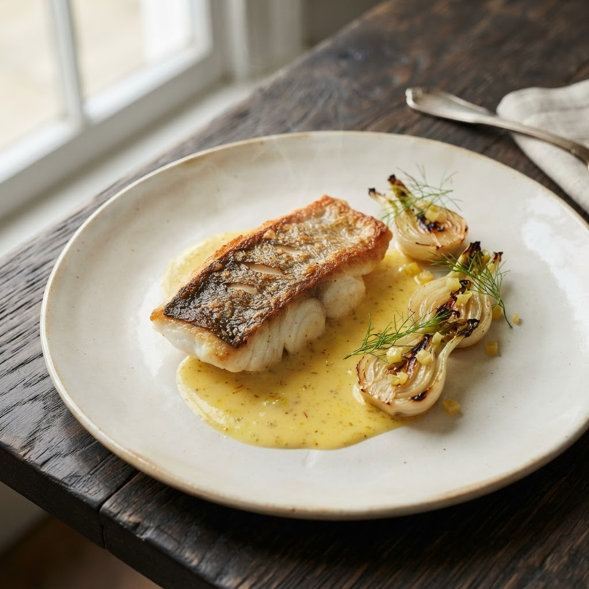

04 / La carte d’automne
Le plaisir, à la carte.
Trois temps, une même exigence. Des produits de saison et le goût des choses bien faites.
Laissez-vous surprendre.
Menu dégustation en six services, imaginé au fil du marché. Pour l’ensemble de la table.
500 DH
Choisir mon momentpar personne · hors boissons

03 / Au fil des saisons
Une nouvelle saison. Une nouvelle émotion.
L’automne s’invite à notre table. Les courges prennent des notes de noisette, les champignons révèlent leur profondeur et les agrumes apportent une lumière inattendue.
Notre carte suit ce mouvement naturel. Des assiettes lisibles, des cuissons précises et des accords qui laissent parler le produit.
Octobre — Décembre